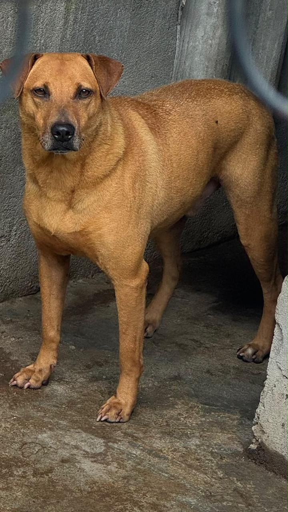
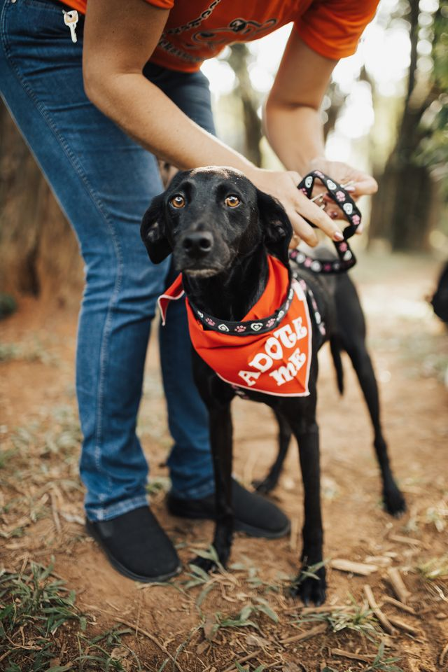
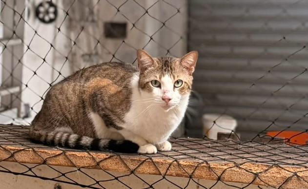
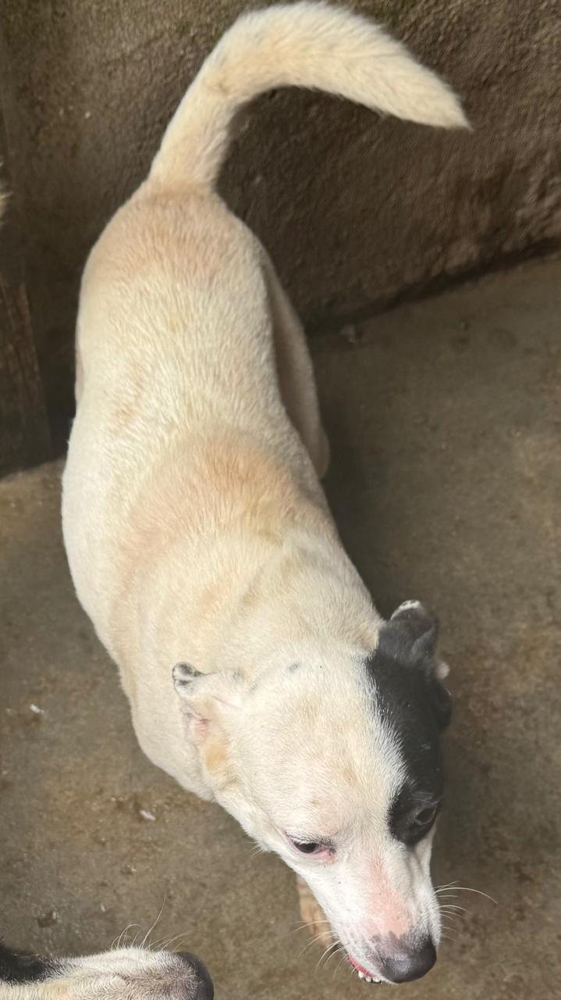
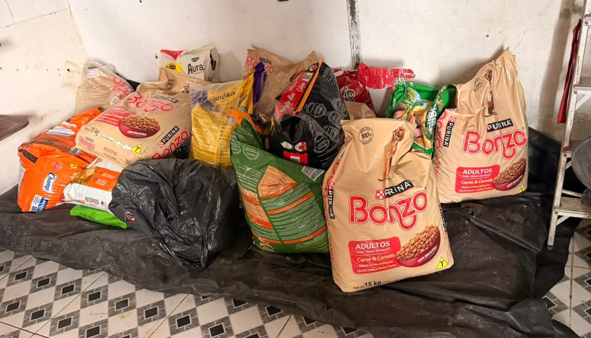

Cachorro dócil e brincalhão, esperando uma família responsável e cheia de carinho.
A Lar dos Pets resgata, cuida e encontra famílias definitivas para cães e gatos em situação de abandono. Praticamos a adoção responsável e acompanhamos tudo de perto — do primeiro encontro ao resto da vida.


Todo animal merece carinho, cuidado e um lugar para chamar de lar. A Lar dos Pets conecta cães e gatos resgatados a famílias que desejam oferecer uma vida cheia de amor e proteção.
Um processo simples, pensado para o bem-estar do animal e a segurança da nova família.
Veja o temperamento, o porte e os cuidados de cada cão e gato disponível
Preencha nosso formulário de interesse e responsabilidade, por fim agende uma visita presencial em nosso abrigo.
Assinado o termo de adoção responsável, o animal vai para casa com suporte contínuo e total.
Alguns dos animais que estão esperando por uma família agora.

Cachorro dócil e brincalhão, esperando uma família responsável e cheia de carinho.

Gato carinhoso e tranquilo, pronto para encontrar um lar seguro e amoroso.

Cachorro companheiro e alegre, aguardando uma família para viver muitas aventuras.
“A equipe acompanhou cada etapa com a gente. Hoje o animal faz parte da família como se sempre tivesse estado aqui.”Carla Menezes — fez uma adoção em 2024
Contribua para a compra de ração, vacinas e castrações. Cada doação ajuda a transformar uma história.
